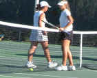
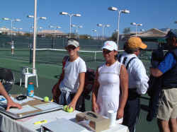
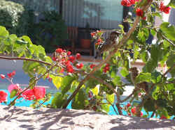
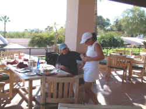
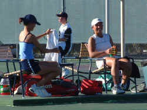
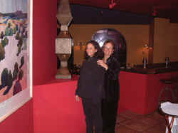

|
Liz ran into the Lindsay Burdette Express in her quarterfinal
Copper Bowl match yesterday morning at the El Conquistador
Country Club. Burdette, who won the Super National 12s hard
courts earlier this year, is an aggressive player from
Georgia. She goes after the ball big time, taking it on the
rise and taking high balls out the air. She often wails at the
ball, and when they are going in, watch out brother. Liz
couldn't get her feet moving early enough and Burdette blasted
her off the court in the first set, 6-0. As they say, it takes
two to make a tennis match; in this case a combination of
Burdette's aggressive play and Lizzie's static feet. Down 2-0
in the second set, Liz began battling back, displaying the
guts and shot
making that got her to the quarters. The points were contested
with ferocity and as Liz pounded them at Burdette, she forced
errors. Still. Burdette went out to a 5-2 lead. Liz did not
give up, but turned on the pressure, hitting lots of winners.
Serving a 5-6, after a long game, she forced a tie-break. Too
bad, but Burdette prevailed 7-4 in the tie-break. The loss put
Liz into the quarterfinal play-offs with her first match
scheduled for later in the afternoon at Country Club
again.
 |
Burdette
and Kobak report their scores to tournament desk after
quarterfinal match. |
After Lizzie's loss, we retreated to the friendly sunshine at
the Westward Look Hotel for a lovely lunch. Liz savored the
fruits of her victory along with a big Caesar salad. With the
mountains in the background, we watched
 |
Watching
the birds at lunch. |
 |
|
Out,
out, dread stain. Lunch at the Westward Look. |
|
|
 |
|
Liz and
Emmy exchange a laugh between games. |
After losing earlier to Burdette in the Quarterfinals,
playoffs for fifth place at the Copper Bowl. Liz took the
court at 3:30 pm at Country Club for the playoffs for fifth
place against Emmy Fritz-Krockow of Virginia. Emmy won the 12s
Copper Bowl last year and is a hard hitter with a very fluid
game. Liz came out banging, looking like the Queen of the
court in the first set. Her powerful strokes won her a lot of
points, but Fritz-Krockow went for a lot on many of Lizzie's
serves, blasting numerous winners. Liz prevailed 6-3. The
second set looked like it would be more of the same, but deep
into the set, at 4-2, Liz, she became a little tentative and
Emmy started cracking more winners off some short balls. There
a couple of breathless exchanges at the net and Emmy came from
behind to win the set 6-4. Another three set match: just what
we didn't want. Again in the third set Liz came out strong and
confident. Leading 4-2, she once again became too conservative
and lofted a few short balls into the court and before you
knew it, Emmy was back. Liz took the lead to 5-3, Emmy battled
back to 4-5, and while we held our collective breath on the
sidelines, Liz took the match with some strong ground strokes
6-4 in the third. The victory put her in the finals for fifth
place against Alexis Plukas, who she had beaten in three sets
at the National 14s last month. She plays in the morning at
Country Club bright and early at 9. Plukas is waiting and
hungry.
 |
|
A
Janos after dinner smile. |
Our
dinner celebration took us to the elegant Westin La
Paloma Resort, home of Janos, one of Tucson's finest
restaurants. Liz marveled at a gold leaf ceiling and
expressed a wish for a ceiling like that at home. Eat
your food girl!
Truly a major league wine list at
Janos to go with the Southwest fusion cuisine. After
spending my usual too much time perusing the selection,
I decided we would try a 1995 Valbuena from Vega Sicilia,
the great house of Spain. This bottle was a mini wine
lesson. We opened initially, Dorothy tasted it and
thought there was nothing to it. I tasted it and found
an fine finessed finish on the back of my palette. My
call was give it more time in the glass. This would have
been a perfect wine for the decanter. By the end of the
meal the wine huge and fabulous, a mountain with
splendid terrain.
The meal was a fine finish for an
exciting day. Back in the condo for our last night in
Tucson we all slept well. |
| |
|